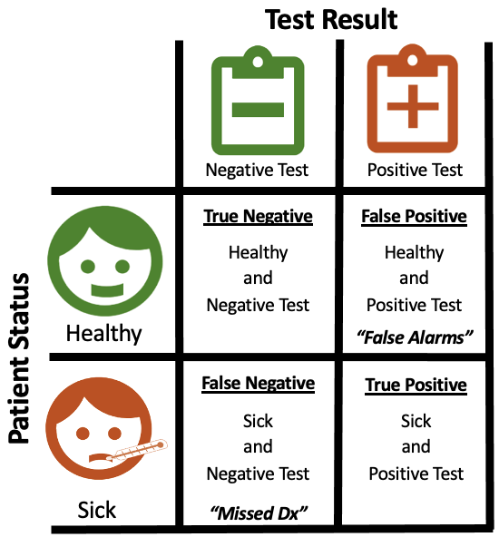
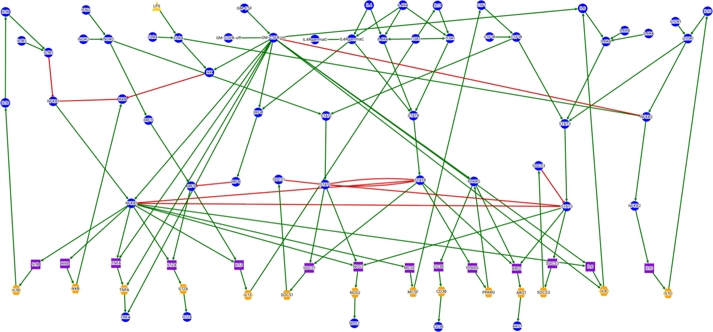

Projects
My port-fo-lio? Sorry, I don't speak Italian. These are things I have built to explain an idea or explore a model, some for work and some for fun. Only I know which is which.

The confusion matrix
A plain-language primer on sensitivity, specificity, and predictive value, written for anyone who has to decide whether to trust a medical test.

Macrophage GM-CSF signaling model
An interactive network from my dissertation. Pick a stimulus scenario and hover any molecule to see its regulators and its simulated response.